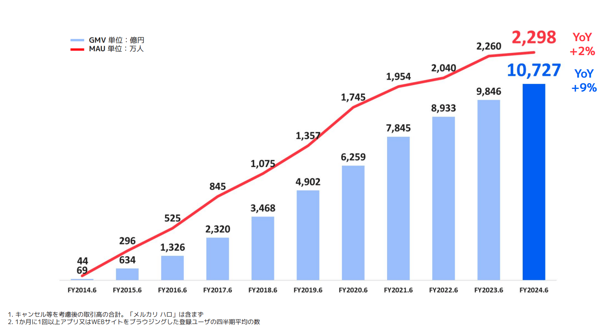
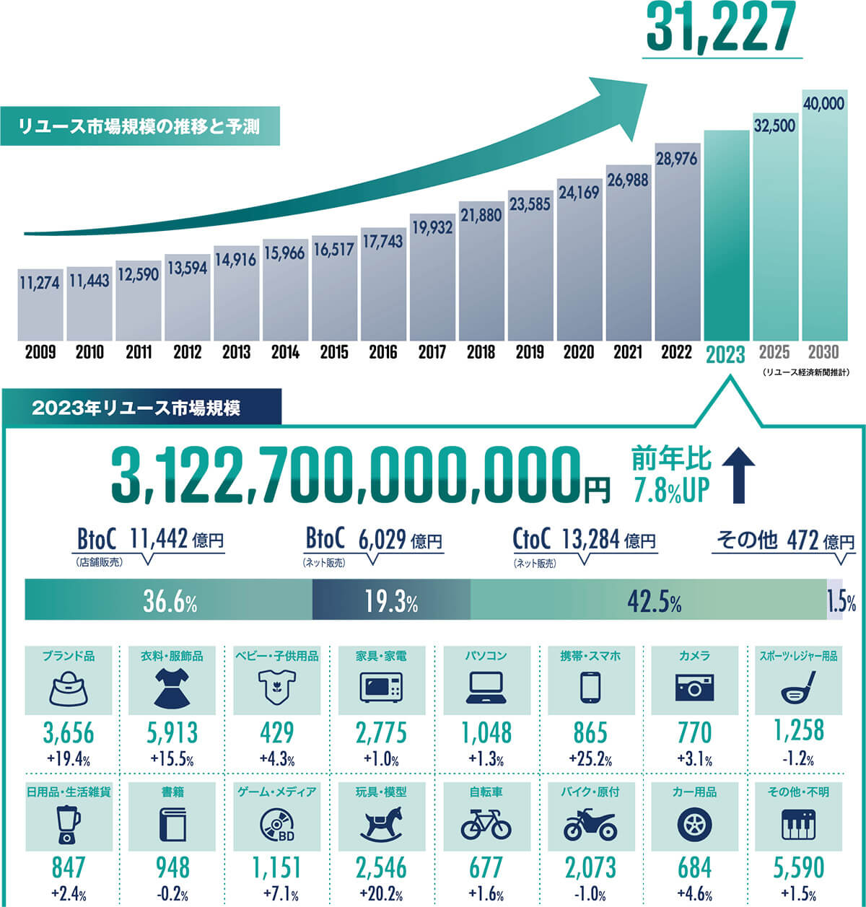
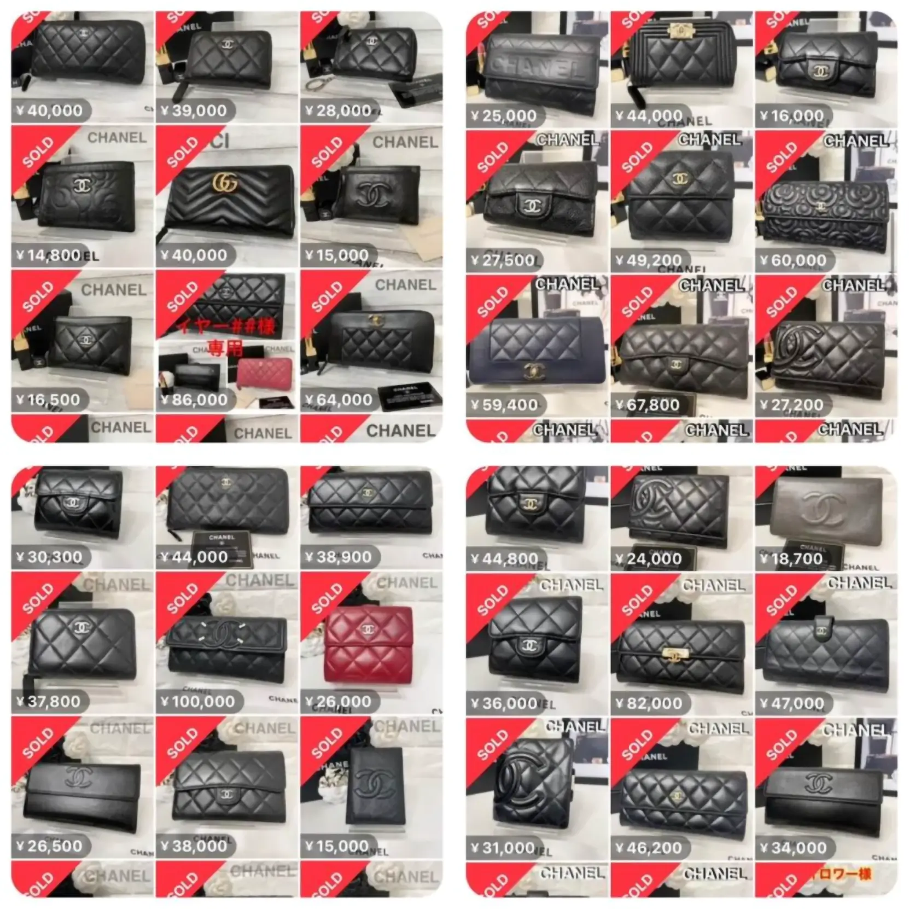
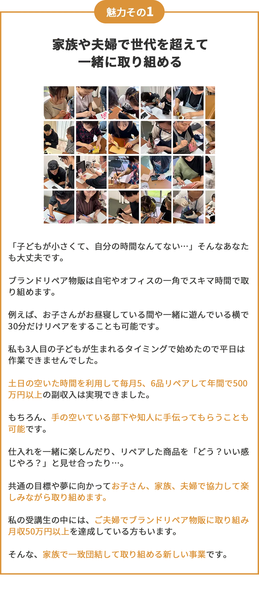
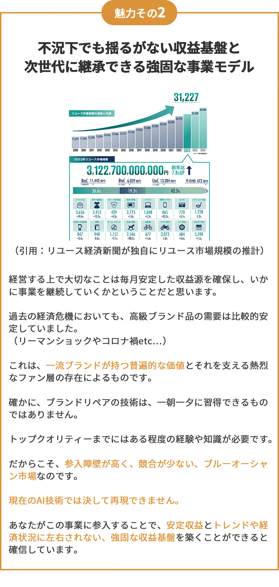
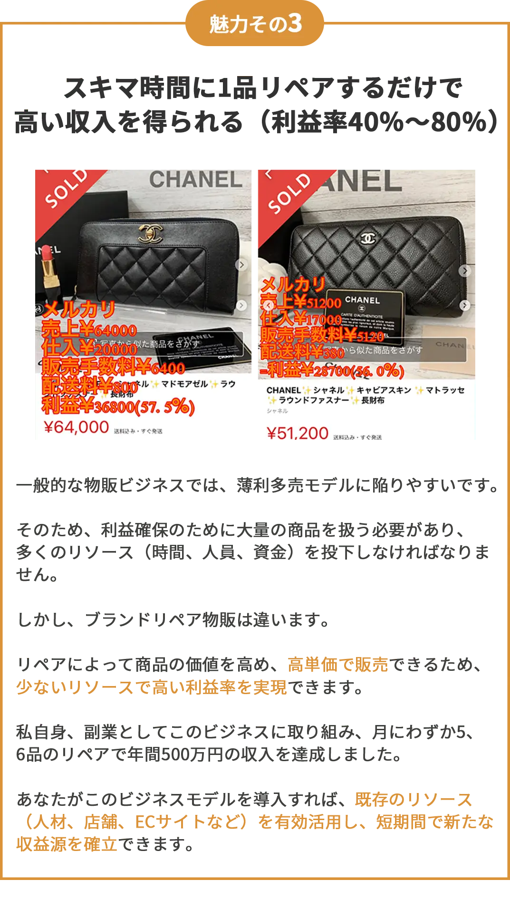
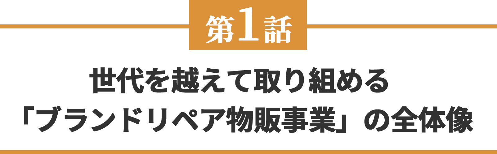
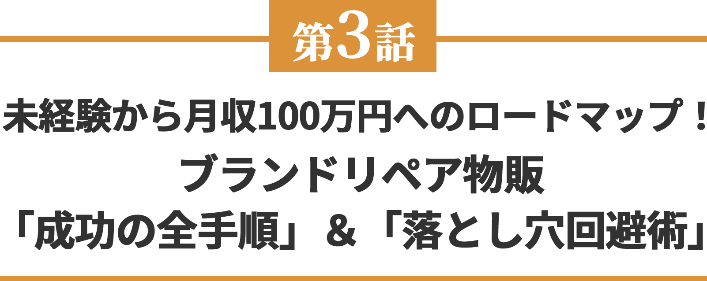
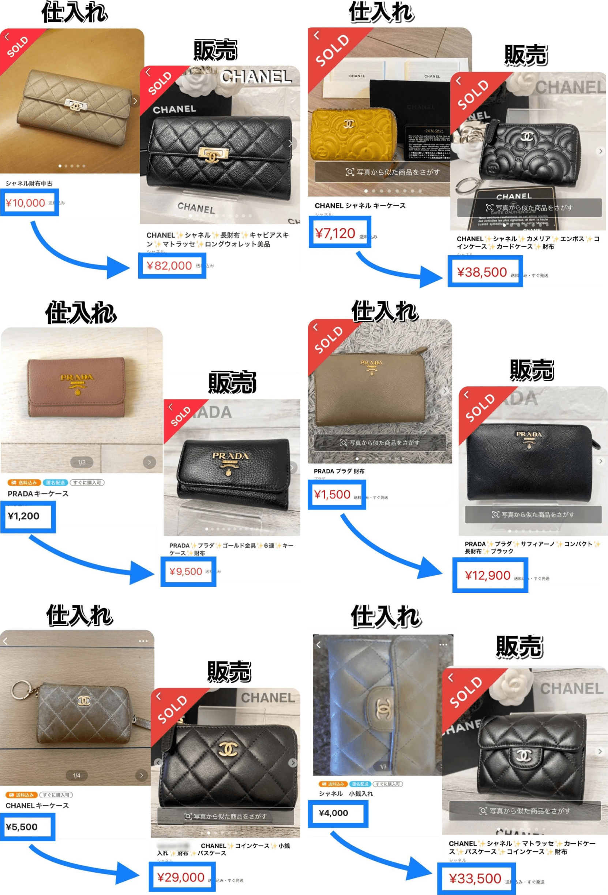
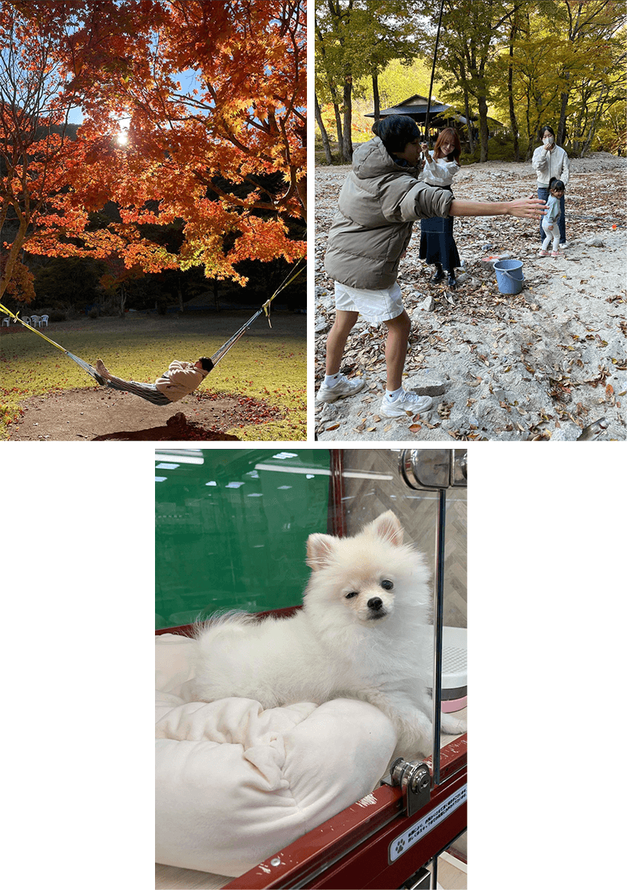

わずか10年で、約224倍
（44億円→9846億円）
この急成長を遂げた
巨大市場の波を
ご存知ですか？

（引用：メルカリ決算説明資料）
このグラフ、見てください。
これは、スマホで物を売り買いできるアプリ、大手メルカリの決算グラフです。
青い棒がメルカリで1年間に売れた金額。
赤い線が、メルカリを使っている人の数です。
2014年から2023年までの10年間で、売れた金額はなんと約224倍（69億円が9846億円に）
使っている人の数も約33倍（44万人が2260万人に）に増えています。
そして、2024年6月には、ついに1兆円を超えました。（2025年3月現在）
これ、すごいことですよね。
「う〜ん、ウチは小さい会社だし、関係ないかな…」
そう思われたかもしれません。
でも、ちょっと待ってください。
実は、あなたにとってものすごいチャンスなんです。
メルカリが伸びているのは、単純に「メルカリがすごい」だけじゃないからです。
世の中の流れと消費者の買い物の仕方、消費に対する価値観が大きく変わってきています。
その証拠に、次のグラフを見てください。
トレンドや不況に左右されない
今や3.1兆円を超える巨大市場...

（引用：リユース経済新聞が独自にリユース市場規模の推計）
このグラフを見てください。
リユース経済新聞が独自に調べた、リユース市場の大きさの推移です。
2023年には3兆1000億円を超え、なんと13年連続で成長し続けているんです。
これは、もう、ただの流行りではありません。
人々の暮らし方、買い物の仕方が、根本から変わってきている証拠です。
なぜ、リユース市場はこんなにも伸びているのか？
「新品じゃなきゃイヤ」そんな時代は終わりました。
良いものを、ムダなく、長く使いたいという地球にもお財布にもやさしい、スマートな選択をする人が若者を中心に増えているんです。
そして、この巨大なリユース市場の中でもここ最近特に賑わっている市場があります。
それが、
『ブランド品市場』（バッグや財布、キーケースなど）
です。
人気のブランド品は時を超えて愛される、資産価値の高い商品です。
古くなっても価値が下がりにくく、状態が良ければ中古でも高値で取引されます。
さらに、限定品やヴィンテージ品など、もう手に入らない、貴重なレアものとの出会いも、この市場の大きな魅力です。
リユース市場の拡大、高まるブランド品需要。
この2つの大きな波に乗る
ビジネスこそ
世代を超えて取り組める
「ブランドリペア物販事業」
ブランドリペア物販事業を一言で表すと、
『リユース×ブランド品×リペア = 世代を超えて取り組めるブランドリペア物販事業」
となります。
貴社の既存リソース（人材、スペース、既存顧客など）を有効活用し、新たな収益源として、月10万円～50万円、100万円以上の安定収入を生み出す可能性を秘めたビジネスモデルです。
もちろん、事業として本格的に展開し外注化や仕組み化を進めることで、さらなる収益拡大も可能です。
顔出しや実名は一切不要。
難しいPCスキルや、煩わしい人間関係、納期に追われるストレスもありません。
「今日は30分時間が取れそうだから、リペア事業を進めよう」
「今月は新規顧客獲得に力を入れよう」
「週末は既存事業の予定が空いているからその時に集中してやろう」
など、社長であるあなたがご自身のペースで柔軟に事業を進めることができます。
私が最もお伝えしたいこと、それは…
従来の物販ビジネスは、時間や労力を犠牲にし、ストレスを抱えながら取り組むもの、というイメージがあるかもしれません。
しかし、「ブランドリペア物販」は、従業員やご家族も巻き込み、楽しみながら取り組める、一生モノのビジネスだということです。
私自身、このビジネスで家族との時間が増え、妻や息子、そして妻の母親までもが、リペア作業を楽しんでいます。
既存の物販事業の有無に関わらず、最短2、3ヶ月で月20万円、30万円の利益を目指すことは十分可能です。
私自身、サラリーマン時代に副業として、月にわずか5、6品のリペアで、年間500万円の収入を得ることができた実績があります。

私は、スキマ時間での副業からスタートし、独立、そして事業化まで、「ブランドリペア物販」で全てを実現しました。
その経験と、累計1000品以上の販売実績、そして幅広い層への指導経験から得た、現場ですぐに役立つ実践的な知識とノウハウを、無料オンライン講座で余すところなくお伝えします。
ですから、あなたが今どんな状況にあろうとも、
・既存事業に新たな収益の柱を加える
・小規模からスタートして段階的に事業を拡大する
・確かな成功事例と具体的な手法に基づき、リスクを抑えて新規事業に参入する
・それぞれの事業フェーズに合わせた最適なロードマップ
これら全てを具体的かつ、机上の空論ではない形でお伝えします。
そして、この方法は私がこれまでに累計1000品以上の販売を繰り返し、そして累計100名以上の老若男女の方に伝授するなかで試行錯誤を繰り返して編み出した、再現性の高い、体系化されたメソッドです。
世代を超えて取り組める
ブランドリペア物販事業
ー 3つの魅力 ー



1日2時間のスキマ時間で
年商1000万円
世代を超えて取り組める
ブランドリペア物販事業
ー 無料オンライン講座の内容を紹介 ー

-
【SDGs時代の波に乗る】転売とは違う「ブランドリペア物販」のやりがいと将来性とは？リユース市場4兆円トレンドに乗る一生モノのビジネスモデルを大暴露
-
乗り換える物販事業を引退したいあなたへ…
長期安定収入＆低在庫リスク、一生モノの物販事業を実現する「ブランドリペア物販」の全貌を公開（元せどりからスタートして独立・事業化を成功させた講師がその過程を語ります）
-
【未経験OK】家事の合間に月30万円？！ スキマ時間で始める「ブランドリペア物販」とは？副収入500万円を稼いだ現役トッププレイヤーがその秘密を公開します
-
手先の器用さは関係なし！あなたにもできる理由を主婦・高齢者・経営者まで多様な成功事例と一緒にお伝えします
-
会社員時代の苦悩から脱却した講師が語る、リアルな成功体験談と、あなたの未来を変える具体的な第一歩とは？
-
【衝撃のBefore/After】数千円のブランド品が〇〇万円に！？驚きの高収益事例を証拠画像付きで大公開
-
利益率40%～80%を叩き出す仕入れ～販売までの全プロセスとは？（未経験の方はこのプロセスをそのまま行ってください...）
-
【本当にスキマ時間でOK？】 タイマーで徹底検証！家事育児の合間、1回20分～リペア作業で本当に稼げるのか？（主婦・副業で取り組みたい方は必見です）
-
1商品10万円超えも夢じゃない？！プロがリペアした高単価財布の実例を惜しみなく紹介！仕入れ値、リペア費用、販売価格…収益のカラクリを公開
-
完全未経験でも安心の3ステップ具体的な作業手順（クリーニング～色止め）を動画付きで丁寧に解説

-
主婦、会社員、経営者…あなたに合ったブランドリペア物販で成功するための完全ロードマップを公開
-
【家族との時間も収入もGET】 講師が実現した時間と場所に縛られない働き方とは？ 具体的なタイムスケジュール例＆家族との協力体制を公開
-
偽物の見分け方、古物商許可、販売時の注意点…現役トッププレイヤーがその方法とは、いったい！？
-
【99%が知らない落とし穴】 未経験からブランドリペア物販で失敗しないための必須知識を解説
-
独学の3倍速で稼ぐ！ブランドリペア物販で最短最速で結果を出すための秘策とは？
ブランドリペア物販に
取り組まれている方より
嬉しいお声をいただいております
「給料、上がらない…でも、収入は増やしたい…」
そんな思いから数年前から副業に取り組み始めました。
最初は、eBayでカメラ輸出に挑戦。
でも、為替の問題もあって利益が出なくてすぐに撃沈…。
次に、Amazon物販にも取り組みました。
これも、売上の波が激しすぎて安定収入には程遠くやめました。
そんな物販副業を転々としていた時に出会ったのが「ブランドリペア物販」だったんです。
最初は「塗る」作業に苦戦しましたが、慣れれば簡単でした。
中古品は、新品とは違い価格競争に巻き込まれることなく、リペアの腕次第で価値が大きく変わります。
そんなリペア未経験の僕でも平日は1時間程度、日曜日にまとまった時間を確保して月30万円を安定して稼げるようになりました。
アルバイトで5万円、10万円を稼ぐのは、本業があるとほぼ無理だと思います。
でも、ブランドリペア物販なら商品3、4つをリペアして販売すれば達成できる可能性があります。
自宅で音楽や映画を楽しみながらでもできるので、体力に自信がない方、時間がない方にもオススメです。
※上記は個人の感想で効果を保証するものではありません
あの夜のことを、今でもはっきりと覚えています。
深夜の布団の中でゴロゴロしながら何気なくスマートフォンを見ていた時に偶然、小堀さんの情報を見つけました。
「家族がいるのに、新しいことを始めて本当に大丈夫だろうか…？」
正直に申し上げますと、最初は不安でいっぱいでした。
特に、家族を持つ身としてはなおさらです。
でも、妻は「やりたいなら、話をだけでも聞いてくれば」と、背中を押してくれました。
もちろんリペアの経験などありませんでした。
「私のような素人に、本当にできるのだろうか…？」と、自信を持つことができませんでした。
初めてリペアした時はボロボロだったブランド品が自分の技術で本当に綺麗になったことに驚いて、記念に写真を撮ったことを覚えています（笑）
しかし、取り組んでいくなかで一つ、また一つと商品が売れるにつれてその不安は少しずつ喜びに変わっていきました。
そして、利益が10万円、15万円…と増え、3ヶ月後には20万円を超えるまでになりました。
その時、「これなら、きっとうまくいく」と、確信に変わったのです。
今はまだ会社員ですが、このビジネス一本で生計を立てていきたいと考えています。
おかげさまで、家族との時間も増えました。
以前は難しかった外食や旅行、子供たちへのプレゼントも、今ではできるようになりました。
本当に幸せなことだと、日々感謝しております。
あの時、勇気を出して一歩踏み出していなければ、今の私はありませんでした。
※上記は個人の感想で効果を保証するものではありません
あの頃、ちょうど「老後2,000万円問題」が話題になっていた時期でした。
年金だけでは生活が厳しいと言われ、漠然とした不安を抱えていたのを覚えています。
「自宅でできる、何か良い仕事はないかしら…」
そう思っていた時、娘婿（私の奥さん）がブランド品のリペアでかなりの収入を得ているという話を聞きました。
「もしかしたら、私にもできるかもしれない…」そんな淡い期待を抱いたのが、すべての始まりです。
私は、絵を描いたり筆を持ったりすることが好きでした。
だから、好きなブランド品を自分の手で蘇らせることができるなんて、まるで夢のような話に思えたのです。
それまでの私の人生でブランド品のリペアなど、全く縁のない世界でした。
ですから、何もかもが新鮮で胸が躍るような気持ちでした。
初めて売れた時の喜びは、今でも忘れられません。
お客様から「綺麗になりました！ありがとう」というお声をいただいた時は、それが何よりの励みになりました。
今でこそ慣れましたが、始めたばかりの頃は楽しくて夜も眠れないほどでした（笑）
そうそう、リカラーができるようになって、思わぬ副産物もありました。
家族の財布や、子供たちのスポーツシューズ、そして私自身のバッグも、自分で綺麗にできるようになったのです。色々な面で節約にもなり、本当に良いことばかりです（笑）
※上記は個人の感想で効果を保証するものではありません
下記に1つでも当てはまる人は、
ブランドリペア物販事業は
オススメです
-
初期投資を抑え難しいITスキル不要で
手軽に始められる新規事業を探している方
-
既存事業とシナジー効果を生み出し
事業全体の成長に貢献できるビジネスモデルを探している方
-
長期的に需要が安定している市場で
老後も楽しく現役で取り組める事業を探している方
-
中古品を再利用する、
環境に配慮したビジネスモデルに共感する方
-
子供や配偶者との時間も大切にしながら
一緒に何かを成し遂げたい、事業を始めたい方
下記の事業をすでに
経営されている方には、
特にオススメです
-
不動産（売買、賃貸、管理、リフォーム）
-
金融
-
買取・リユース関連
-
古着屋
-
質屋
-
店舗ビジネス
-
小売店（アパレル、雑貨、アクセサリーなど）
-
美容室、エステサロン
-
中古品販売店（本、CD、DVD、ゲーム、家電、家具など）
ブランドリペア物販を
組み合わせることで、
こんなことが実現できます
- 住宅購入時の不要品買取
- 住宅売却時の不用品買取
- リフォーム時の不用品買取
- リペア済みブランド品販売
- 買取商品の価値向上、高値再販
- ブランド品専門買取店としての圧倒的差別化
- 不用品回収時のブランド品買取
- ブランド修理サービスの追加
- 生前整理時のブランド品買取
- 遺品整理時のブランド品買取
- 故人の愛用品リペア
- 店舗でのブランド品買取
- 店舗でのブランド品販売
- リペア技術の店舗備品への活用
このノウハウを無料で広めるには
私なりの理由があります...
無料で公開するのには、明確な理由があります。
それは、この事業モデルがあなたの新たな収益の柱になることはもちろん、既存事業にも相乗効果をもたらすと確信しているからです。
私自身、このビジネスモデルにより長年勤めた会社を退職し、時間的・経済的・精神的な自由を手に入れました。
最初は「自宅の一畳スペース」「スキマ時間」で本当に収益化できるのか半信半疑でした。
が、4500円のシャネルの財布が2万7000円で売れた時の感動は、今でも忘れられません。ット知識や体力不要で取り組める一生モノの副業がいい」と、思われているあなたにお伝えしたいんです。
その後、週末の限られた時間で月に5、6品のブランド品をリペア・販売するだけで、副収入は年間500万円を超え、本業の収入をも上回るまでになりました。


（今年、家族と旅行へ行ったりした時の写真です笑。
愛犬リキも）
現在は愛する妻と、3人の子供たちと、好きな時に旅行に行き、美味しいものを食べ、将来への不安を感じることなく、心から笑い合える。
そんな日々を手に入れることができました。
この経験から、私は「ブランドリペア物販」が、単なる個人の副業にとどまらず、企業の新規事業としても大きな可能性を秘めていると確信しています。
ブランドリペア物販には多くの魅力があります。
「高い収益性」「低リスク」「市場の成長性」「社会貢献性」etc…
そして、なによりブランドリペア物販は既存事業との親和性があります。
既存事業に導入することで、
・商品ラインナップの拡充による売上向上
・顧客単価向上による収益性向上
・リペアサービスによる新たな収益源の確保
・顧客満足度向上によるリピート率向上
・競合他社との差別化
・新たな商材追加による売上向上
・集客力強化による新規顧客獲得
・リペアサービスによる付加価値提供
・ブランド品の知識・センスを活かせる新たな事業展開
・既存スキルを応用した高付加価値商品の開発
・オリジナルリペアブランドによる新たな収益源の確保
・顧客ロイヤルティ向上によるブランド価値向上
・高単価なリペアサービスによる収益性向上
・事業多角化によるリスク分散
・新たな顧客層の開拓による売上向上
・技術者育成による企業価値向上
などの相乗効果を狙えます。
私が一人で数千万円の売上を達成できたノウハウを組織的に展開すれば、さらに大きな収益を生み出すことは間違いありません。
今回、無料オンライン講座では、本来有料でお伝えしている内容も一部公開いたします。
これは、このビジネスモデルの可能性を一人でも多くの経営者の方に実感していただきたいからです。
ただし、今回は期間限定での公開とさせていただきます。
ぜひ、この機会を逃さず、詳細をご確認いただき、「世代を超えて取り組めるブランドリペア物販事業」の全貌を手に入れてください。
あなたの既存事業をスケールさせる要因になると確信しております。
よくある質問
Q.みんなが中古品を買い漁ると、仕入れ商品はなくなりませんか？
A.結論：ご安心ください。ブランド品は毎日大量に出回っています。
「みんなが始めたら、仕入れる商品がなくなっちゃうんじゃないの…？」
そう心配される方もいるかもしれませんね。でも、安心してください。中古ブランド品市場はあなたが想像する以上に巨大で活気のある市場なんです。リサイクルショップに
フリマアプリに出品したりする方も年々増えています。
Q.手先が不器用ですが、リペアなんてできますか？
A.結論：まったく問題ないです。誰でもプロ級の仕上がりができます。
「私、不器用だから、細かい作業は苦手…」「リペアやったことないし、難しそう…」そう思っていませんか？実は、私も最初はそうでした。むしろ、不器用な方だったんです。でも大丈夫です。リペアの技術は練習すれば誰でも必ず上達します。自転車に乗る練習と同じ。何度も練習するうちに自然と乗れるようになりますよね。それと全く同じで慣れるので大丈夫です。
Q.世間のイメージが悪い「転売」とは全く別物でしょうか？
A.結論：全く別物です。ブランドリペア物販は感謝されるビジネスです。
転売と聞くと「安く買って、高く売る」「なんだか、悪いことをしている…」そんなイメージを持つ方もいるかもしれません。でも、ブランドリペア物販は全く違います。私たちが扱うのは本来なら捨てられてしまうかもしれない、傷や汚れで価値が下がってしまったブランド品たち。それらを丁寧にリペアしメンテナンスすることで、再び輝きを取り戻すお手伝いをする。お客様は、憧れのブランド品を新品同様の状態でしかも、お手頃な価格で手に入れることができる。つまり、私たちは、お客様に「感動」と「喜び」をお届けしているんです。私がリペアした商品を購入されたお客様から感謝の言葉をいただくたびに、この仕事のやりがいと誇りを感じています。